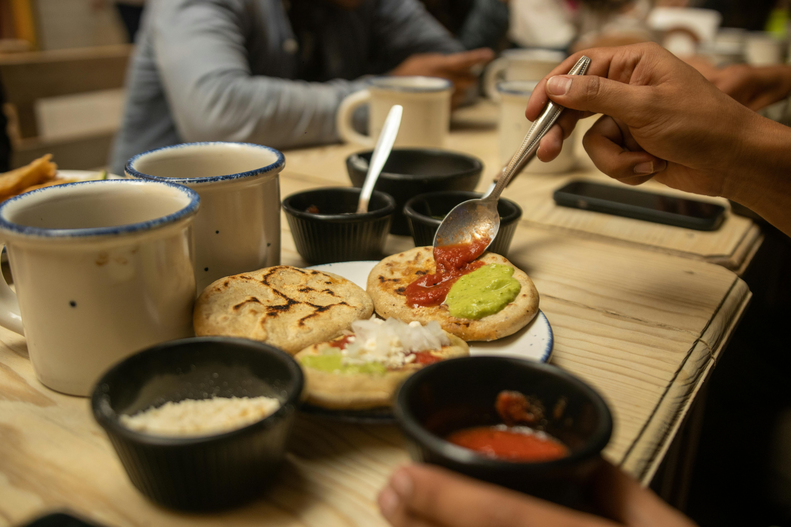

Descubra um mundo de sabores sem preocupações. O SafeBite personaliza cada ingrediente para garantir que sua refeição seja deliciosa e, acima de tudo, segura.
Utilizamos seus dados de restrições alimentares exclusivamente para filtrar receitas e gerar alertas inteligentes em tempo real. Você está no controle.
Nossa tecnologia analisa cada ingrediente para que você possa focar no que realmente importa: cozinhar e comer bem.
Receitas selecionadas automaticamente com base no seu perfil de alergias e preferências dietéticas.
Se um ingrediente perigoso for detectado em uma receita, avisamos você instantaneamente.
Gerencie as restrições de toda a sua família em um único lugar, trocando de conta com facilidade.
De pratos veganos a dietas livres de glúten ou lactose. Nossa comunidade e especialistas garantem que você nunca fique sem opções.

Junte-se a milhares de pessoas que já transformaram sua relação com a comida através do SafeBite.
Criar Minha Conta Grátis